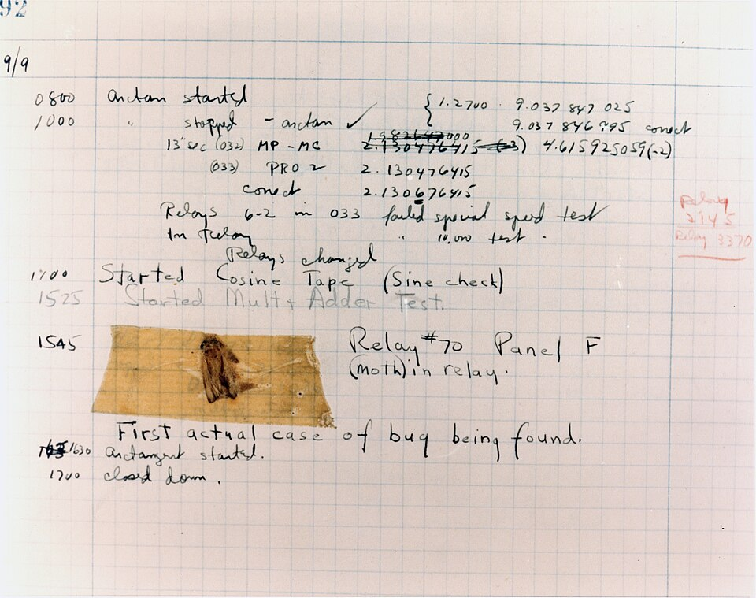

Módulo 07 — Manejo de Errores
Excepciones

Cuando algo falla, Python lanza una excepción. Si no la capturás, el programa termina con traceback.
>>> 10 / 0
ZeroDivisionError: division by zero
>>> int("abc")
ValueError: invalid literal for int() with base 10: 'abc'
>>> abrir_archivo("inexistente.txt")
FileNotFoundError: [Errno 2] No such file or directorytry / except
try:
numero = int(input("Número: "))
resultado = 100 / numero
print(resultado)
except ValueError:
print("No es un número válido")
except ZeroDivisionError:
print("No se puede dividir por cero")Capturar varias excepciones a la vez
try:
...
except (ValueError, TypeError) as e:
print(f"Error: {e}")Capturar todas (úsalo poco)
try:
...
except Exception as e: # captura casi todo
log(e)
raise # re-lanza para no ocultar bugs
except: # ⚠️ ANTI-PATRÓN: captura hasta KeyboardInterrupt
passRegla:
except Exception está bien si re-lanzás. except: (bare) es un bug esperando.else y finally
try:
archivo = open("datos.txt")
except FileNotFoundError:
print("No existe")
else:
# solo si no hubo excepción
procesar(archivo)
finally:
# SIEMPRE se ejecuta (haya o no excepción)
archivo.close()Lanzar excepciones — raise
def dividir(a, b):
if b == 0:
raise ValueError("El divisor no puede ser cero")
return a / bRe-lanzar con contexto
try:
proceso_complejo()
except ValueError as e:
raise RuntimeError("Falló el proceso") from eExcepciones personalizadas
class SaldoInsuficienteError(Exception):
def __init__(self, saldo, monto):
super().__init__(f"Saldo {saldo} < monto {monto}")
self.saldo = saldo
self.monto = monto
class Cuenta:
def __init__(self, saldo):
self.saldo = saldo
def retirar(self, monto):
if monto > self.saldo:
raise SaldoInsuficienteError(self.saldo, monto)
self.saldo -= montoJerarquía recomendada
class MiAppError(Exception):
"""Base de todas las excepciones de la app."""
class ValidationError(MiAppError): pass
class NotFoundError(MiAppError): pass
class PermissionError(MiAppError): passPermite capturar todas tus excepciones con except MiAppError.
Jerarquía built-in
BaseException
├── KeyboardInterrupt
├── SystemExit
└── Exception
├── ArithmeticError
│ ├── ZeroDivisionError
│ └── OverflowError
├── LookupError
│ ├── KeyError
│ └── IndexError
├── ValueError
├── TypeError
├── OSError
│ ├── FileNotFoundError
│ ├── PermissionError
│ └── ConnectionError
└── RuntimeErrorCapturá la más específica posible. CapturarExceptioncuando solo te importaKeyErroroculta otros bugs.
Context managers (with)
Garantizan limpieza incluso si hay excepción:
with open("datos.txt") as archivo:
contenido = archivo.read()
# archivo se cierra automáticamente al salir del withCrear tu propio context manager
Con clase
class Cronometro:
def __enter__(self):
import time
self.inicio = time.time()
return self
def __exit__(self, exc_type, exc_val, tb):
import time
print(f"Tomó {time.time() - self.inicio:.4f}s")
return False # False = no suprime excepciones
with Cronometro():
sum(range(10**6))Con contextlib
from contextlib import contextmanager
@contextmanager
def cronometro():
import time
inicio = time.time()
try:
yield
finally:
print(f"Tomó {time.time() - inicio:.4f}s")
with cronometro():
sum(range(10**6))Assertions
Para invariantes que nunca deberían fallar (no para validar input de usuario):
def media(numeros):
assert len(numeros) > 0, "Lista vacía"
return sum(numeros) / len(numeros)⚠️ Las assertions se desactivan con
python -O. No las uses para seguridad ni validación crítica.EAFP vs LBYL
Dos filosofías:
- LBYL (Look Before You Leap): chequear antes de actuar
- EAFP (Easier to Ask Forgiveness than Permission): intentar y manejar el error
Python prefiere EAFP:
# LBYL — más lento, race conditions posibles
if "clave" in diccionario:
valor = diccionario["clave"]
# EAFP — más pythónico
try:
valor = diccionario["clave"]
except KeyError:
valor = "default"
# Mejor aún (para este caso)
valor = diccionario.get("clave", "default")Logging vs print
Para producción, usá logging:
import logging
logging.basicConfig(level=logging.INFO, format="%(asctime)s [%(levelname)s] %(message)s")
log = logging.getLogger(__name__)
try:
resultado = operacion_riesgosa()
except Exception:
log.exception("Falló la operación") # incluye traceback automáticamenteEjercicios
- Función
parse_int_seguro(s)que devuelveNonesi no se puede parsear (sin try/except a la vista del caller) - Excepción
EmailInvalidoErrory función que la lance ante email mal formado - Context manager que abre y cierra una conexión a DB simulada (logueando ambos eventos)
- Wrapper
reintentar(fn, n)que ejecutefnhastanveces si lanza excepciones - Refactorizar un código LBYL a EAFP con
dict.get()o try/except